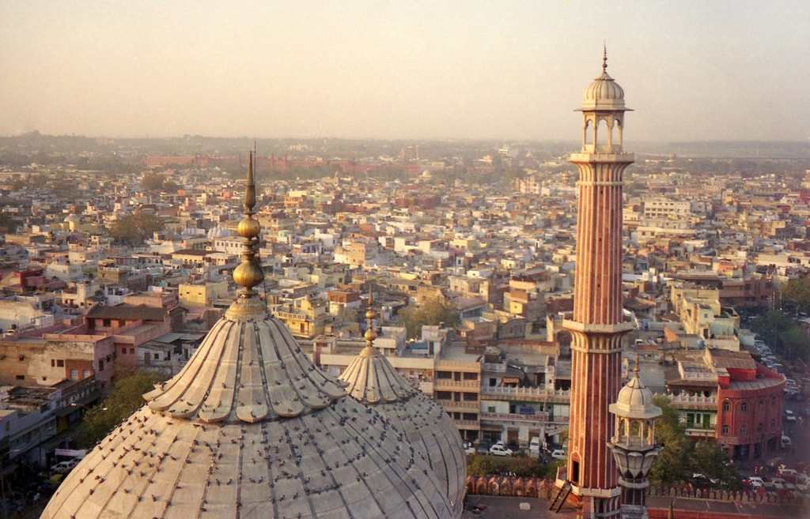
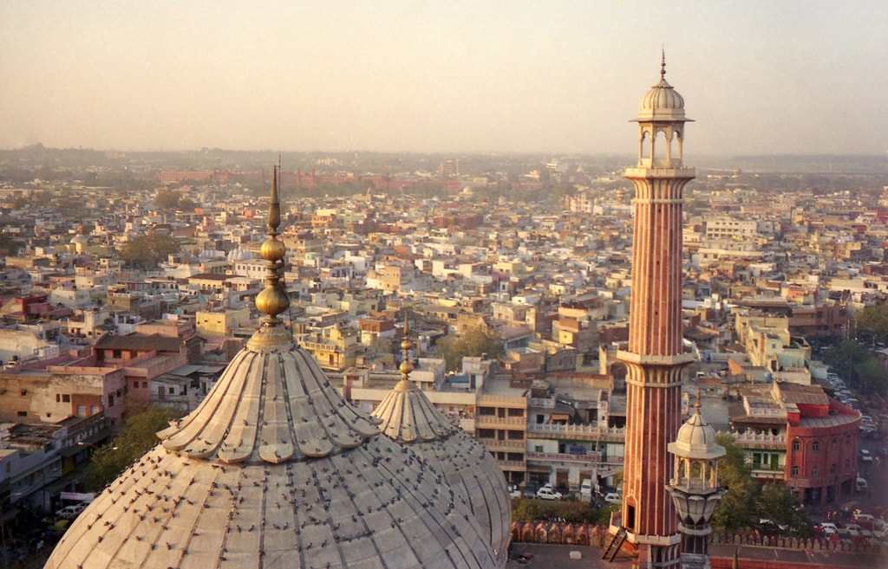

About
Mughal Emperor Shah Jahan built the Jama Masjid between 1650 and 1656, at the highest point of Shahjahanabad. The mosque was designed by architect Ustad Khalil, and constructed by approximately 5000 workers.[7][8][9] The workforce was diverse, consisting of Indians, Arabs, Persians, Turks, and Europeans. The construction was supervised primarily by Sadullah Khan, the wazir (or prime minister) during Shah Jahan's reign, and Fazil Khan, the comptroller of Shah Jahan's household. The cost of the construction at the time was ten lakh (one million) rupees.[10] The mosque was inaugurated on 23 July, 1656 by Syed Abdul Ghafoor Shah Bukhari, from Bukhara, Uzbekistan. He had been invited by Shah Jahan to be the Shahi Imam (Royal Imam) of the mosque.[11]
The mosque was one of the last monuments built under Shah Jahan. After its completion, it served as the royal mosque of the emperors until the end of the Mughal period. The khutba was recited by the Mughal emperor during the Friday noon prayer, legitimising his rule. The mosque was hence a symbol of Mughal sovereignty in India, carrying political significance. It was also an important centre of social life for the residents of Shahjahanabad, providing a space transcending class divide for diverse people to interact.
Eastern gate of the Jami Masjid, painted in 1795 by Thomas Daniell
The British took over Shahjahanabad in 1803. The Mughal Emperor remained the ritual imperial head of the mosque, but Mughal power and patronage had significantly waned.[13][14] The initial policy of the British in the city was favourable towards its residents; the British undertook repairs and even renovations of the Jama Masjid.[13] The Masjid continued to serve as a site of social and political discourse, in keeping with other mosques of Delhi at the time; for example, theological and philosophical debates were held between Muslims and Christians.[15]
The Revolt of 1857 was a major turning point in this situation. This event resulted in the deaths of many British people in the city, and weakened colonial authority, deeply affronting the British.[13] It also ended the Mughal empire. The British perceived the revolt as instigated by Muslims, cultivated within Delhi's mosques.[16] After the British reclaimed the city in the same year, they razed many mosques and banned the congregation of Muslims in any remaining mosques. The Jama Masjid fell into British confiscation during this time, and was barred from any religious use. It was repeatedly considered for destruction, but the British eventually began using it as barracks for its Sikh and European soldiers. This was a desecration of the space; Aziz characterises the decision as deliberate, in order to insult the sentiments of the city's Muslim inhabitants.[17]